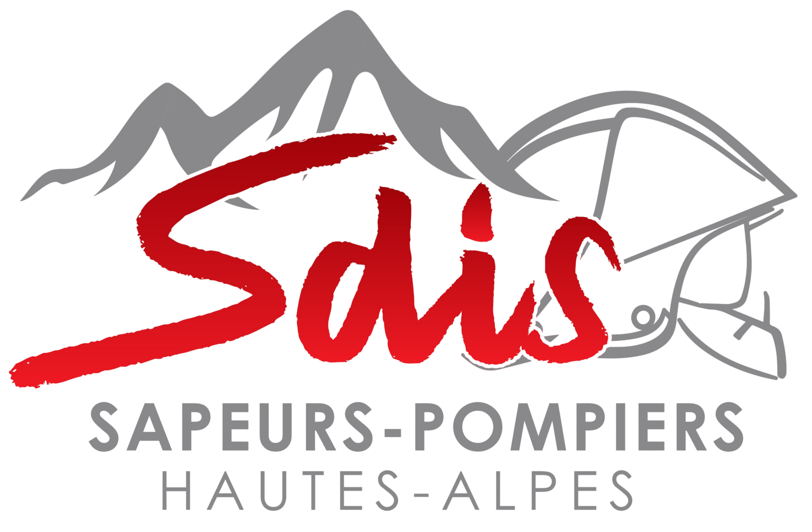

QPACRE
SECOURISME
📝
GÉNÉRALITÉS SUR LES BILANS
❤️
URGENCES VITALES
🩺
MALAISES ET AFFECTIONS SPÉCIFIQUES
🦴
TRAUMATISMES
⚠️
ATTEINTES CIRCONSTANCIELLES
🧠
SOUFFRANCE PSYCHIQUE ET COMPORTEMENTS INHABITUELS
📌
SITUATIONS PARTICULIÈRES